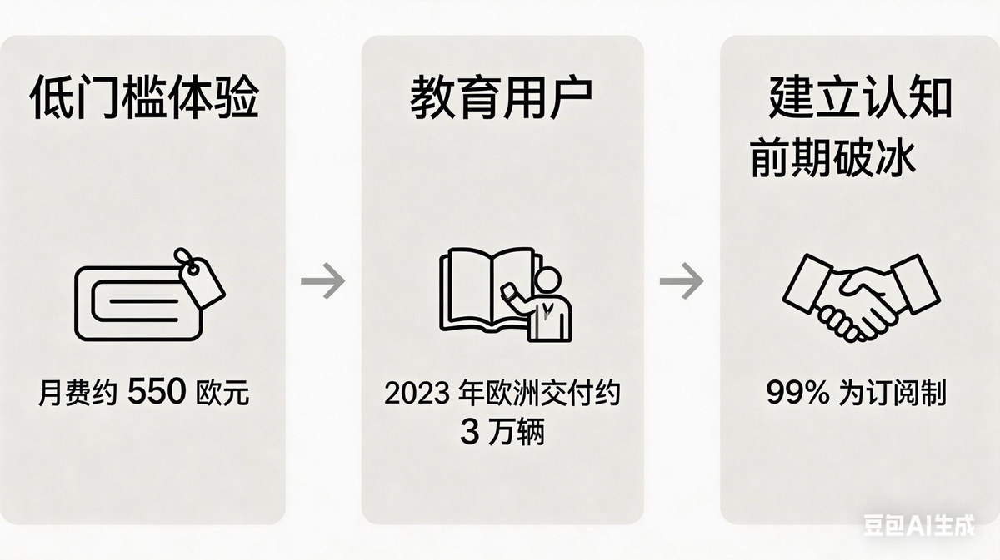

G03_结构稳定性_低门槛体验到建立认知_模型2.png

Review metadata
| Conversation | 20260506-图片风格总结分析 |
|---|---|
| Group | G03 · 第一轮结构稳定性：低门槛体验→教育用户→建立认知 |
| Test purpose | 测试三阶段价值 / 事实链结构的跨模型稳定性。 |
| Current filename | G03_结构稳定性_低门槛体验到建立认知_模型2.png |
| Original filename | image(11).png |
| Canonical path | references/text2pic/conversations/20260506-图片风格总结分析/originals/images/G03_结构稳定性_低门槛体验到建立认知_模型2.png |
| Canonical SHA-256 | 4655250c5544af17b1eb2b60dd6de67b4535f60703af7b1a1e0005c3ec23a29a |
| User feedback evidence | references/text2pic/conversations/20260506-图片风格总结分析/IMAGE_MANIFEST.md § G03 第一轮结构稳定性：低门槛体验→教育用户→建立认知 |
| Rule-impact evidence | references/text2pic/conversations/20260506-图片风格总结分析/IMAGE_MANIFEST.md § G03 第一轮结构稳定性：低门槛体验→教育用户→建立认知 |
| Duplicate bytes elsewhere in corpus | — |
Preview/thumbnail are derived review assets. The canonical path remains the authority. GitHub may show an LFS pointer at that path unless the client resolves LFS.
Single-image metadata JSON · Canonical repository path · Exploration evidence document
{kind=link}